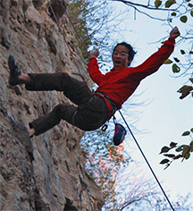
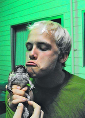
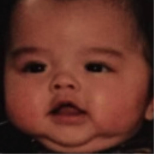
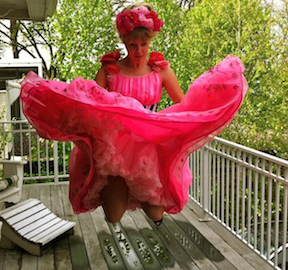
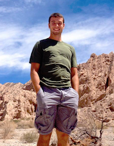

The Team
Andrew Yang |
Andrew's go to weird fact about himself is that he can lick his elbow. His hobbies include climbing and singing a little too loudly in the shower. He would also really like for someone to explain to him why we can't or don't correct to 20/10 vision. |
Ben Wedin |
Ben began his life as a wee little tadpole, floating in the ethereal domain of cyberspace. After achieving his Theta certification, he was upgraded into a meatbag and allowed to thrive on planet Terra. In his free time, he enjoys playing music and frolicking in the woods. |
Justin Lim |
Justin Lim is a small boy trapped in the body of a pubescent boy. He enjoys throwing the ol' frisbee disc around and playing tag with the other kids. His hair also changes color with his mood. |
Marielle Foster |
Marielle likes to play games. Here are two truths and a lie: 1) Marielle is a chronic sleepwalker whose latest antics include checking her email at 3am, leaving her earplugs on her roommates doorknob in the middle of the night, and putting on multiple pairs of socks. 2) Marielle plays for CUT (Carleton Ultimate team), an Open D1 frisbee team. She was originally going to run D1 track, but decided to go to Carleton because of the academics. She made friends with one of the senior guys on CUT, who saw her sprint during a new student week game and recruited her to the team. She got too busy with student government to commit full time (she does have a CUT tattoo though!), but they liked her so much she gets to just come to practice occasionally and the major tournaments. 3) Marielle is going to be working at a computer security company next year, on their philosophy team (Ontology) thinking about abstractions of abstractions and working for a tool using mammal. |
Sef van Kan |
Sef van Kan is as computer science major and aspiring computer programmer. In his free time, Sef enjoys practicing the cello, playing ultimate frisbee and exploring the outdoors. Lately, Sef's favorite music has been Abdullah Ibrahim's "Blues for a Hip King". |